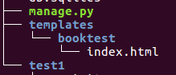

模板
- 模板是html页面，可以根据视图中传递的数据填充值
- 创建模板的目录如下图：

- 修改settings.py文件，设置TEMPLATES的DIRS值
'DIRS': [os.path.join(BASE_DIR, 'templates')],
- 在模板中访问视图传递的数据
{{输出值，可以是变量，也可以是对象.属性}}
{%执行代码段%}
定义index.html模板
<!DOCTYPE html>
<html>
<head>
<title>首页</title>
</head>
<body>
<h1>图书列表</h1>
<ul>
{%for book in booklist%}
<li>
<a href="{{book.id}}">
{{book.btitle}}
</a>
</li>
{%endfor%}
</ul>
</body>
</html>
定义detail.html模板
- 在模板中访问对象成员时，都以属性的方式访问，即方法也不能加括号
<!DOCTYPE html>
<html>
<head>
<title>详细页</title>
</head>
<body>
<h1>{{book.btitle}}</h1>
<ul>
{%for hero in book.heroinfo_set.all%}
<li>{{hero.hname}}---{{hero.hcontent}}</li>
{%endfor%}
</ul>
</body>
</html>
使用模板
- 编辑views.py文件，在方法中调用模板
from django.http import HttpResponse
from django.template import RequestContext, loader
from models import BookInfo
def index(request):
booklist = BookInfo.objects.all()
template = loader.get_template('booktest/index.html')
context = RequestContext(request, {'booklist': booklist})
return HttpResponse(template.render(context))
def detail(reqeust, id):
book = BookInfo.objects.get(pk=id)
template = loader.get_template('booktest/detail.html')
context = RequestContext(reqeust, {'book': book})
return HttpResponse(template.render(context))
去除模板的硬编码
- 在index.html模板中，超链接是硬编码的，此时的请求地址为“127.0.0.1/1/”
<a href="{{book.id}}">
- 看如下情况：将urlconf中详细页改为如下，链接就找不到了
url(r'^book/([0-9]+)/$', views.detail),
- 此时的请求地址应该为“127.0.0.1/book/1/”
- 问题总结：如果在模板中地址硬编码，将来urlconf修改后，地址将失效
- 解决：使用命名的url设置超链接
- 修改test1/urls.py文件，在include中设置namespace
url(r'^admin/', include(admin.site.urls, namespace='booktest')),
- 修改booktest/urls.py文件，设置name
url(r'^book/([0-9]+)/$', views.detail, name="detail"),
- 修改index.html模板中的链接
<a href="{%url 'booktest:detail' book.id%}">
Render简写
- Django提供了函数Render()简化视图调用模板、构造上下文
from django.shortcuts import render
from models import BookInfo
def index(reqeust):
booklist = BookInfo.objects.all()
return render(reqeust, 'booktest/index.html', {'booklist': booklist})
def detail(reqeust, id):
book = BookInfo.objects.get(pk=id)
return render(reqeust, 'booktest/detail.html', {'book': book})